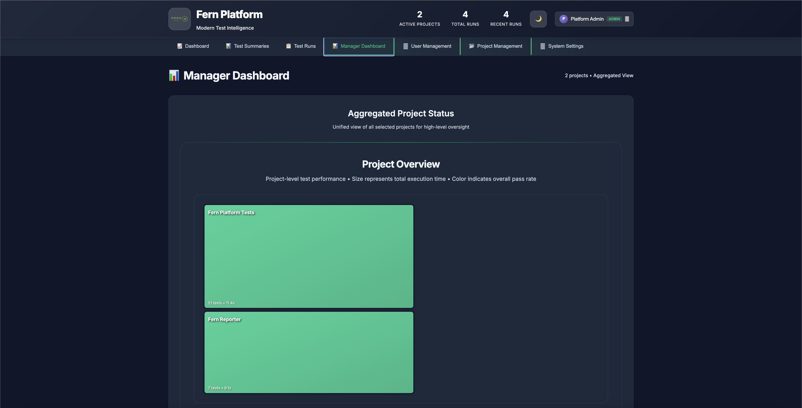
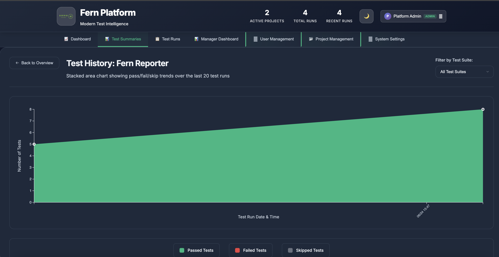
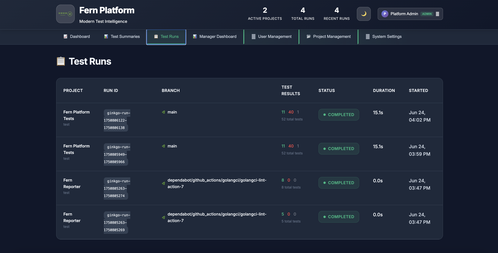
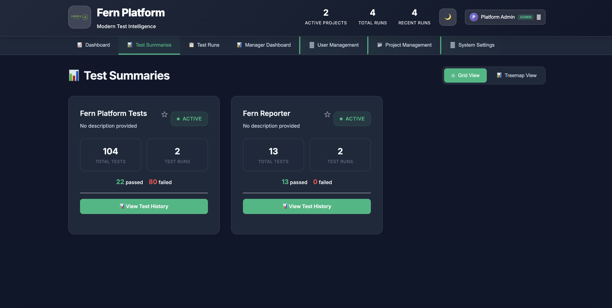

Stop drowning in scattered test data. Start understanding what your tests are telling you with this free, open-source platform featuring AI-powered insights and beautiful visualizations.
Get Started in 15 Minutes Watch a 2-minute demo showing how Fern transforms your test data into actionable insights
Test data chaos is killing your productivity and release confidence
Everything you need to transform your test data into actionable insights
Visualize your entire test suite health at a glance. Drill down from project level to individual test failures with beautiful, interactive treemaps.
Track pass/fail trends over time with beautiful stacked area charts. Identify patterns and monitor test stability across releases.
Comprehensive test run details with status, duration, and branch information. Perfect for debugging and tracking CI/CD pipeline health.
Clean project cards showing test metrics, pass rates, and quick access to detailed analysis. Perfect for team leads and managers.
OAuth 2.0/OpenID Connect with any provider. Role-based access control and secure authentication built into the open-source platform.
Currently supports Ginkgo, JUnit, and Jest with dedicated client libraries. Extensible architecture allows community contributions for additional frameworks.
Choose your deployment path and transform your test intelligence today
Connect with engineers transforming their test intelligence
Show your support and stay updated with the latest releases and features.
Ask questions, share use cases, and connect with other Fern Platform users.
Help us improve by reporting bugs or requesting new features.